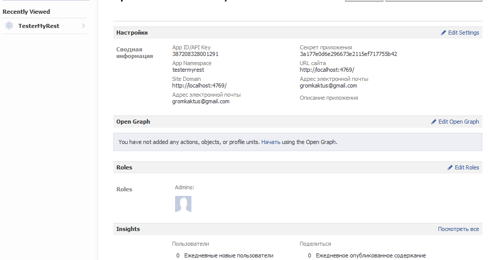
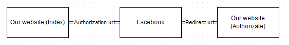

API Facebook на С# - 28 September, 2012
Tags: facebook, api
I know there are a lot of information about working with Facebook API, but... I just think more information is better then less.
I need to post different types of context to Facebook pages (user create his own page, give us the name of page). OK, let's go!
I m using ASP.NET MVC, you know... Link to the project.
All events has been shown on the main page.
- Create our application in facebook.

You see there is secret key and application key. We need them to working with facebook through our application.
- Authorization (OAuth 2.0).

- Ask user to permission.
- User will be redirected to facebook access page.
- User give us needed permission.
- User has been redirected back to our web site with special code.
There is the step 4 (we get the code from redirecting response).
public void GetAccessToken()
{
if (HttpContext.Current.Request.Params.AllKeys.Contains("code"))
{
code = HttpContext.Current.Request.Params["code"];
//get the short-lived user access_toke
string request = string.Format(_tokenEndpoint, _applicationId, _redirectTo, _applicationSecret, code);
var webClient = new WebClient();
string response = webClient.DownloadString(request);
string[] pairResponse = response.Split('&');
accessToken = pairResponse[0].Split('=')[1];
//get the long-lived user access_toke
request = string.Format(_exchangeAccessToken, _applicationId, _applicationSecret, accessToken);
webClient = new WebClient();
response = webClient.DownloadString(request);
if (!accessToken.Equals(response.Split('=')[1]))
{
throw new AccessViolationException();
}
GetUserInformation();
}
else if (HttpContext.Current.Request.Params.AllKeys.Contains("error"))
{
error = HttpContext.Current.Request.Params["error"];
throw new AccessViolationException(error);
}
throw new HttpException();
}
That is my facebook controller
public ActionResult Index()
{
if (!Client.IsAuthorizated)
{
return Redirect(Client.UriToAuth);
}
return View(new FacebookModel {Name = ""});
}
public ActionResult Authorizate()
{
Client.GetAccessToken();
return RedirectToAction("Index");
}
After getting code we need to get the id of the page:
private void GetUserInformation()
{
string request = "https://graph.facebook.com/me?access_token=" + accessToken;
var webClient = new WebClient();
string response = webClient.DownloadString(request);
user = JObject.Parse(response);
GetPagesInformation();
}
private void GetPagesInformation()
{
string request = "https://graph.facebook.com/" + user.SelectToken("id") + "/accounts?access_token=" +
accessToken;
var webClient = new WebClient();
string response = webClient.DownloadString(request);
userPages = JObject.Parse(response);
page = userPages.SelectToken("data").First(x => x.SelectToken("name").ToString().Equals(_pageName));
}
- OK, let's start to posting something. Here is my configuration:
private static readonly Dictionary<string, string> Config = new Dictionary<string, string>
{
{"AuthorizationEndpoint", "https://graph.facebook.com/oauth/authorize?client_id={0}&redirect_uri={1}&scope=manage_pages,create_event,publish_stream"},
{"TokenEndpoint", "https://graph.facebook.com/oauth/access_token?client_id={0}&redirect_uri={1}&client_secret={2}&code={3}"},
{"ApplicationId", "387222228001291"},
{"ApplicationSecret", "3a177e2231e2966733771775b42"},
{"RedirectTo", "http://localhost:4769/Facebook/Authorizate"},
{"PageName", "TesterMyRest Community"}
};
Posting video.
public string CreateVideo(MemoryStream imageMemoryStream, string title, string fileName)
{
string boundary = "---------------------------" + DateTime.Now.Ticks.ToString("x");
var uploadRequest =
(HttpWebRequest)
WebRequest.Create("https://graph.facebook.com/" + page.SelectToken("id") + "/videos?access_token=" +
page.SelectToken("access_token"));
uploadRequest.ServicePoint.Expect100Continue = false;
uploadRequest.Method = "POST";
uploadRequest.UserAgent = "Mozilla/4.0 (compatible; Windows NT)";
uploadRequest.ContentType = "multipart/form-data; boundary=" + boundary;
uploadRequest.KeepAlive = false;
var sb = new StringBuilder();
const string formdataTemplate = "--{0}\r\nContent-Disposition: form-data; name=\"{1}\"\r\n\r\n{2}\r\n";
sb.AppendFormat(formdataTemplate, boundary, "title", HttpContext.Current.Server.HtmlEncode(title));
const string headerTemplate = "--{0}\r\nContent-Disposition: form-data; name=\"{1}\"; filename=\"{2}\"\r\nContent-Type: {3}\r\n\r\n";
sb.AppendFormat(headerTemplate, boundary, "source", fileName, @"application/octet-stream");
string formString = sb.ToString();
byte[] formBytes = Encoding.UTF8.GetBytes(formString);
byte[] trailingBytes = Encoding.UTF8.GetBytes("\r\n--" + boundary + "--\r\n");
long imageLength = imageMemoryStream.Length;
long contentLength = formBytes.Length + imageLength + trailingBytes.Length;
uploadRequest.ContentLength = contentLength;
uploadRequest.AllowWriteStreamBuffering = false;
Stream strmOut = uploadRequest.GetRequestStream();
strmOut.Write(formBytes, 0, formBytes.Length);
var buffer = new Byte[checked((uint) Math.Min(4096, (int) imageLength))];
int bytesRead;
imageMemoryStream.Seek(0, SeekOrigin.Begin);
while ((bytesRead = imageMemoryStream.Read(buffer, 0, buffer.Length)) != 0)
{
strmOut.Write(buffer, 0, bytesRead);
}
strmOut.Write(trailingBytes, 0, trailingBytes.Length);
strmOut.Close();
var wresp = uploadRequest.GetResponse() as HttpWebResponse;
Encoding enc = Encoding.UTF8;
if (wresp != null)
{
var stream = wresp.GetResponseStream();
if (stream != null)
{
var loResponseStream = new StreamReader(stream, enc);
return "https://graph.facebook.com/" + loResponseStream.ReadToEnd();
}
}
return string.Empty;
}
- Change the information about the page.
WebHelper class:
public static class WebWorker
{
private static void AddPostParameter(Dictionary<string, string> values, StringBuilder postBody)
{
foreach (string key in values.Keys)
{
if (postBody.Length > 0)
{
postBody.Append("&");
}
postBody.Append(string.Format("{0}={1}", key, values[key]));
}
}
public static JObject DownloadJson(string requestUrl)
{
var webClient = new WebClient();
string response = webClient.DownloadString(requestUrl);
return JObject.Parse(response);
}
public static string UploadString(string requstUrl, Dictionary<string, string> values)
{
var webClient = new WebClient();
var postBody = new StringBuilder();
AddPostParameter(values, postBody);
return webClient.UploadString(requstUrl, postBody.ToString());
}
}
private string CreateStatus(Dictionary<string, string> values)
{
string request = "https://graph.facebook.com/" + page.SelectToken("id") + "/feed?access_token=" +
page.SelectToken("access_token");
return WebWorker.UploadString(request, values);
}